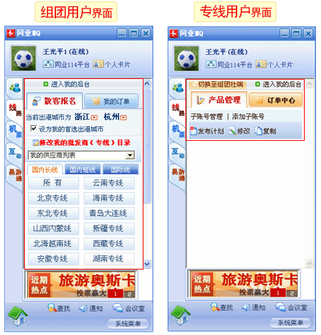

| 帮助中心首页 > 同业MQ > 左侧选项卡【线路】操作 |
| 左侧选项卡【线路】操作 |
|
【线路】选项卡，系统自动区分用户类型，内容有对应变化。如： 组团用户：根据做在地系统自动进入您的IP所在地，线路区分为“国内长线”“国内短线”“国际线”，同业114平台提供全面专业的专线共您选择，如果您想快速找到您长期合作的专线的产品，您可以使用“挑选专线”功能，筛选合作专线！ 专线用户：您可以发布您的专线线路产品，设置同事子账号，订单中心可以管理您的订单。更多功能可以“进入我的后台”查阅。更多更方便使用的专线功能，敬请您登录体验！  |